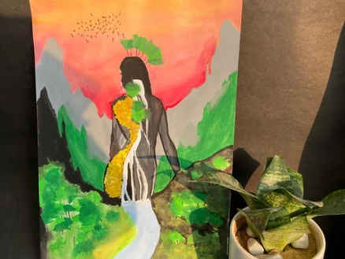

Campus Life

School
Was established in 1869
For almost 150 years, La Martinière Girls’ College has been committed to academic excellence for girls. Today, La Martinière is at the forefront of 21st century education with real-life experiences and leadership opportunities integrated into the curriculum. At the core we offer a rigorous and challenging curriculum designed to excel in Board Examinations (ICSE & ISC XII) with the skills and knowledge needed to navigate contemporary times. Our expert team of teachers cultivate intellectual curiosity. They inspire, challenge and prepare the students not only for college but for a lifetime of learning, leading, and doing. Students take a hands-on, active approach to their education so that they can apply what they learn to real-life situations.
School
Was built in 1869
At La Martinière Girls’ College, Special Education & Counselling sessions provide students with identified disabilities specialized instruction designed to meet their unique learning needs, giving them the opportunity to develop to their fullest potential. It is a purposeful intervention (preventative, remedial or compensatory) designed to overcome or eliminate the obstacles that keep children with disabilities from learning. Some children with disabilities require special accommodations to achieve success while other children must be taught skills to compensate for the existence of a disability. We believe that students flourish when given the tools for success within a caring environment.
School Achievements
Supporting your Alma Mater
Each day people like you step forward for La Martinière. As alumni,we are the Martinière legacy. Through La Martiniere Girls’ Alumni Association we are part of a great institution that shaped our lives and enabled our dreams. A gift in support of La Martinière keeps us connected to our Alma Mater & to each other. Your generous gift honours your success as a graduate from one of the best institutions of India. Your gift to the General Fund (any amount) makes you a part of something bigger — supporting crucial aspects like renovating Khursheed Manzil, modernizing classrooms, paving the extensive grounds, maintaining the gardens and playgrounds. Alternatively, you can fund a specific project. There are several ways to support your Alma Mater.
School News
-
ARTISTRY RELIEF
Art has been a part of our life ever since man came to being. For thousands of years, people have been creating, looking at, criticizing, and enjoying art. Being an artist isn’t just about putting pencil to paper, or brush to canvas. Art can and does mean so much more than that, to so many people. Art is a way of seeing the world, a sense of expression, a form of therapy, and sometimes a compulsion we simply must create! Through our website and auction we look forward to providing a platform to young and creative minds. The funds collected for these artworks will help us together bring a change in the lives of the underprivileged people.
La Martinière Girls Alumni Association
La Martinière Girls Alumni Association